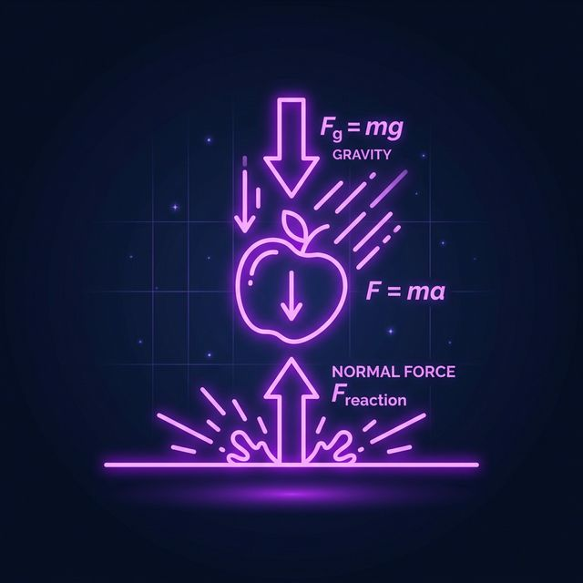
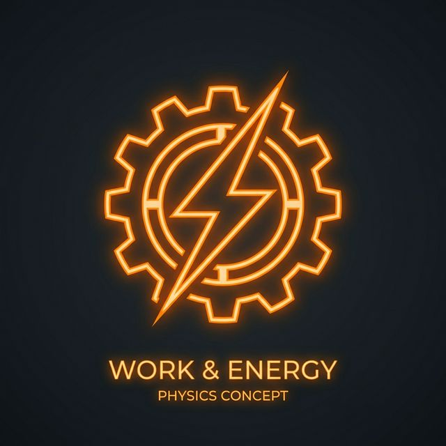
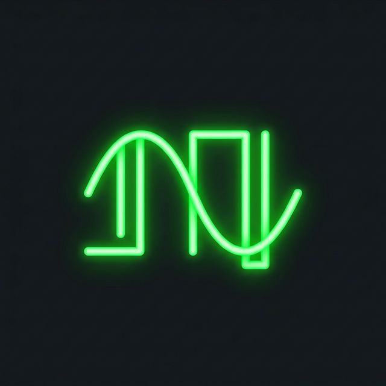
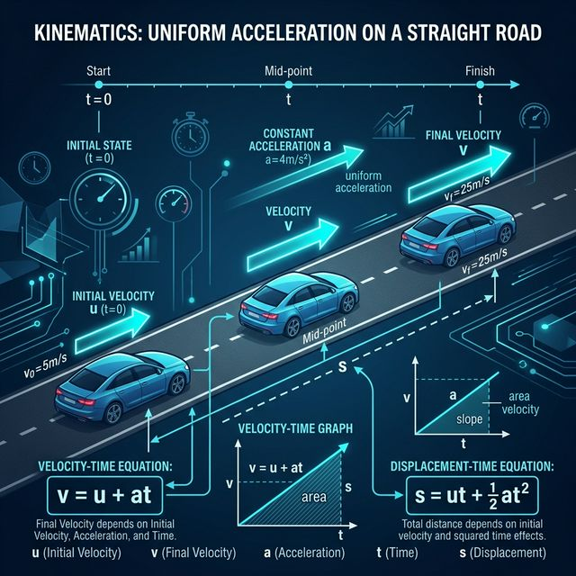
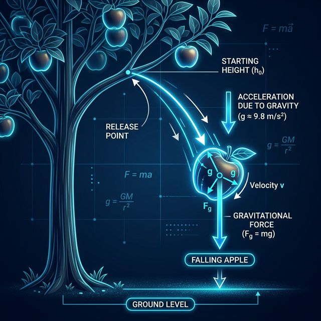
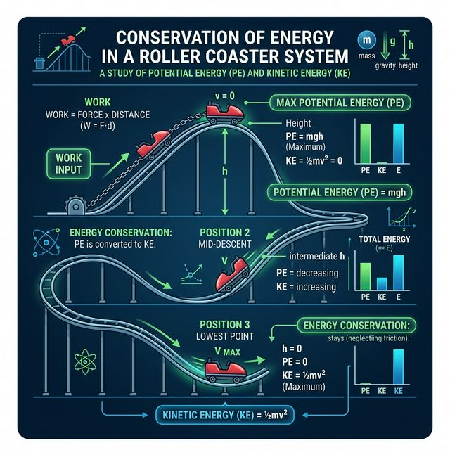
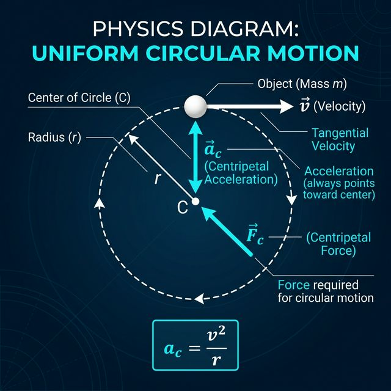
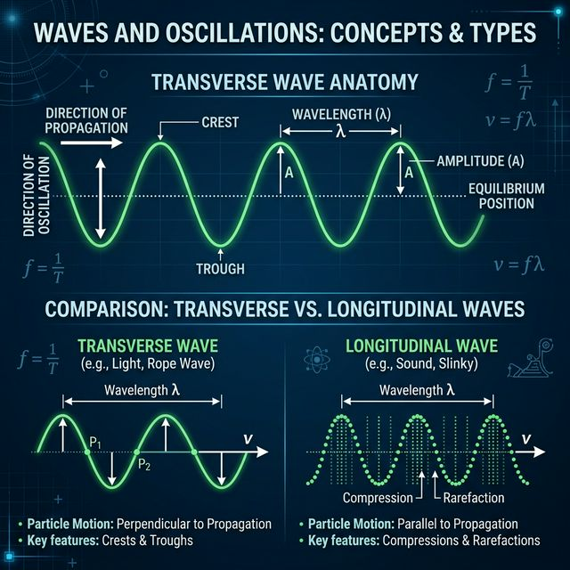
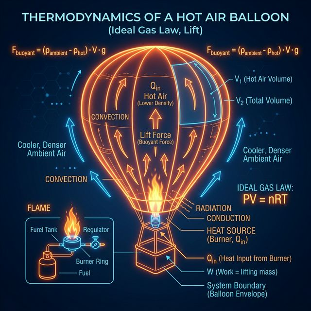

เรียนรู้จากการลงมือปฏิบัติจริง ทดลองจำลองสถานการณ์ และฝึกทำโจทย์ ตามหลักการเรียนรู้สมัยใหม่
เนื้อหาครอบคลุมตามหลักสูตร จัดลำดับจากง่ายไปยาก เพื่อให้ผู้เรียนสร้างความรู้อย่างต่อเนื่อง
การเคลื่อนที่เส้นตรง ความเร็ว ความเร่ง และสมการการเคลื่อนที่

กฎทั้งสามของนิวตัน แรง มวล และความเร่ง

งานเชิงกล พลังงานจลน์ พลังงานศักย์ และการอนุรักษ์พลังงาน
ความเร็วเชิงมุม แรงสู่ศูนย์กลาง และการประยุกต์

การสั่นอย่างง่าย คลื่นกล คลื่นเสียง และคลื่นนิ่ง
อุณหภูมิ ความร้อน กฎของแก๊ส และเทอร์โมไดนามิกส์
เนื้อหา สูตร และตัวอย่างโจทย์ในแต่ละบท — คลิกแท็บเพื่อสลับบทเรียน

จลนศาสตร์ศึกษาการเคลื่อนที่ของวัตถุโดยไม่คำนึงถึงสาเหตุของการเคลื่อนที่ ปริมาณสำคัญได้แก่ ตำแหน่ง (x), การกระจัด (Δx), ความเร็ว (v), ความเร่ง (a) และเวลา (t)
ความเร็ว = อัตราการเปลี่ยนแปลงของตำแหน่งต่อเวลา เป็นปริมาณเวกเตอร์
สมการเหล่านี้ใช้ได้เฉพาะเมื่อความเร่งมีค่าคงที่เท่านั้น
ในการศึกษาฟิสิกส์ ปริมาณต่างๆ จะถูกแบ่งออกเป็น 2 ประเภทหลัก:
ข้อควรระวัง: อัตราเร็ว = ระยะทาง/เวลา (สเกลาร์) แต่ ความเร็ว = การกระจัด/เวลา (เวกเตอร์)
โจทย์: รถยนต์เริ่มต้นจากหยุดนิ่ง มีความเร่ง 3 m/s² จงหาความเร็วและระยะทางที่เคลื่อนที่ได้ใน 5 วินาที
โจทย์: ปล่อยก้อนหินลงมาจากดาดฟ้าตึก หินตกกระทบพื้นในเวลา 3 วินาที ตึกนี้สูงเท่าใด? (g = 9.8 m/s²)
ปรับค่าความเร่งแล้วกดเริ่ม เพื่อดูรถวิ่งด้วยความเร่งที่กำหนด
รถเริ่มต้นจาก 0 ด้วยความเร่ง 4 m/s² ใน 5 วินาที ความเร็วจะเป็นเท่าใด?

กฎข้อที่ 1 (กฎความเฉื่อย): วัตถุจะคงสภาพนิ่งหรือเคลื่อนที่เป็นเส้นตรงด้วยความเร็วคงที่ ถ้าไม่มีแรงลัพธ์กระทำต่อวัตถุ
กฎข้อที่ 2: ความเร่งของวัตถุแปรผันตรงกับแรงลัพธ์และแปรผกผันกับมวล
กฎข้อที่ 3 (กฎแรงปฏิกิริยา): ทุกแรงกิริยามีแรงปฏิกิริยาที่มีขนาดเท่ากันแต่ทิศทางตรงข้าม
เรื่องน่ารู้: นิวตันค้นพบกฎเหล่านี้จากคำถามที่ว่า "แรงอะไรที่ทำให้ผลแอปเปิลตกสู่พื้นดิน และแรงนั้นเป็นแรงเดียวกับที่ตรึงดวงจันทร์ไว้กับโลกหรือไม่?"
N คือแรงปฏิกิริยาตั้งฉาก (Normal force) ไม่ใช่น้ำหนัก บนพื้นเอียงค่า N จะไม่เท่ากับ mg
หัวใจสำคัญของการแก้โจทย์กฎนิวตันคือการวาด FBD — วาดเฉพาะวัตถุที่สนใจ และใส่แรงทั้งหมดเป็นลูกศรเวกเตอร์
โจทย์: วางกล่องมวล 5 kg บนพื้นเอียงทำมุม 30° ถ้าพื้นไม่มีแรงเสียดทาน ความเร่งคือเท่าใด?
ปรับแรง (F) และมวล (m) แล้วดูผลของความเร่ง
แรง 20N ดันมวล 4kg ที่อยู่นิ่งให้มีความเร่งเท่าใด?

งานเชิงกล (W) เกิดขึ้นเมื่อแรงกระทำต่อวัตถุและวัตถุเกิดการเคลื่อนที่ในทิศทางของแรง
กฎอนุรักษ์พลังงาน: พลังงานไม่สามารถสร้างหรือทำลายได้ เพียงแต่เปลี่ยนรูปจากรูปแบบหนึ่งไปสู่อีกรูปแบบหนึ่ง
แรงอนุรักษ์ คือแรงที่งานรวมในการเคลื่อนที่ครบรอบมีค่าเป็นศูนย์ (งานไม่ขึ้นกับเส้นทาง) เช่น แรงโน้มถ่วง และ แรงสปริง
ส่วน แรงไม่อนุรักษ์ คืองานที่ขึ้นกับเส้นทาง เช่น แรงเสียดทาน (ยิ่งเดินอ้อม งานยิ่งเสียไปมาก)
โจทย์: ดึงลูกตุ้มมวล 1 kg ขึ้นไปสูง 0.2 m แล้วปล่อย อัตราเร็วขณะผ่านจุดต่ำสุดคือเท่าใด? (g=10)
เลื่อนตำแหน่งลูกบอลบนรางเพื่อดูการแปลงพลังงาน PE ↔ KE
วัตถุ 2kg ตกจาก 5m มีพลังงานศักย์เริ่มต้นเท่าใด? (g=10)

การเคลื่อนที่แบบวงกลม คือการที่วัตถุเคลื่อนที่รอบจุดศูนย์กลางคงที่ด้วยรัศมีที่คงที่
ในมุมมองของผู้สังเกตการณ์ภายนอก (Inertial Frame) แรงหนีศูนย์กลางไม่มีจริง สิ่งที่มีจริงคือความเฉื่อยของวัตถุที่พยายามจะวิ่งเป็นเส้นตรง แต่กลับถูกแรงสู่ศูนย์กลางดึงกลับมาเป็นวงกลม ทำให้คนข้างในกล่องรู้สึกเหมือนถูกผลักออก (Pseudo Force)
โจทย์: รถเข้าโค้งรัศมี 40 m ด้วยความเร็วสูงสุด 20 m/s โดยไม่ไถล สัมประสิทธิ์ความเสียดทานคือเท่าใด? (g=10)
ปรับความเร็วและรัศมี เพื่อดูความเร่งสู่ศูนย์กลางที่เปลี่ยนไป
วัตถุวิ่งวงกลม รัศมี 2m ความเร็ว 4m/s ความเร่งสู่ศูนย์กลางคือ?

คลื่นกลอาศัยตัวกลางในการส่งผ่านพลังงาน โดยสิ่งสำคัญคือ ความถี่ (f) และความยาวคลื่น (λ)
เมื่อคลื่น 2 ขบวนมาเจอกัน จะเกิดการซ้อนทับกัน (Superposition):
โจทย์: ตะโกนหน้าผา ได้ยินเสียงสะท้อนกลับมาใน 4 วินาที ระยะจากหน้าผา 680 m อัตราเร็วเสียงคือ?
ปรับความถี่และแอมพลิจูดเพื่อดูรูปร่างคลื่นเปลี่ยนไป
คลื่น 10 Hz ความยาวคลื่น 2m มีความเร็วเท่าใด?

การถ่ายเทความร้อนและการเปลี่ยนสถานะของสาร เกี่ยวข้องกับความจุความร้อน
รู้หรือไม่? กฎข้อที่ 2 ของอุณหพลศาสตร์ ไม่เพียงอธิบายทิศทางของความร้อน แต่ยังใช้บ่งชี้ "ทิศทางของเวลา (Arrow of Time)" ผ่านเอนโทรปีที่ต้องเพิ่มขึ้นเสมอในระบบปิด!
โจทย์: ใช้น้ำแข็ง 2 kg ที่ 0°C หลอมละลายหมดเป็นน้ำที่ 0°C ต้องใช้ความร้อนเท่าใด? (L = 334 kJ/kg)
ปรับมวลและอุณหภูมิที่เปลี่ยนไปเพื่อดูความร้อนที่ต้องใช้
กระบวนการที่ปริมาตรคงที่ เมื่อเพิ่มความร้อน ความดันจะเป็นอย่างไร?
ทดลองปรับค่าตัวแปรและสังเกตผล — เรียนรู้จากการปฏิบัติจริงตามแนวคิด Active Learning
ทำแบบฝึกหัดเพื่อตรวจสอบความเข้าใจ ระบบจะให้ Feedback ทันที
เว็บไซต์นี้ออกแบบตามหลักการเรียนการสอนที่มีประสิทธิภาพ
ใช้สื่อหลากหลายระดับ ตั้งแต่ข้อความ สูตร ภาพ ไปจนถึงการจำลองสถานการณ์แบบโต้ตอบ เพื่อให้ผู้เรียนได้รับประสบการณ์ตรง
ผู้เรียนสามารถโต้ตอบกับสถานการณ์จำลอง ปรับค่าตัวแปร และทำแบบฝึกหัดได้ด้วยตนเอง ส่งเสริมการสร้างความรู้ด้วยตนเอง
ระบบให้ Feedback ทันทีหลังตอบคำถาม ช่วยให้ผู้เรียนรู้ว่าเข้าใจถูกหรือผิด และได้รับคำอธิบายเพิ่มเติม
เนื้อหาถูกจัดลำดับจากง่ายไปยาก สอดคล้องกับหลักการออกแบบการสอน เพื่อให้ผู้เรียนสร้างความรู้ได้อย่างเป็นระบบ
เว็บไซต์นี้คือแหล่งการเรียนรู้ ICT ที่เรียนได้ทุกที่ทุกเวลา ตามหลัก Lifelong Learning และ Flexible Learning
วิเคราะห์ผู้เรียน → กำหนดวัตถุประสงค์ → เลือกสื่อ → ใช้สื่อ → กำหนดส่วนร่วม → ประเมินผล